R7 divider-deviator
2 rolls- The R7 "ignored-template" keeper: crisp panels, divider lines cut away, P1 scale-matched
Input(s)r7-divider-grey14-noborder-r6sword-1 + its crops
See this case’s inputs; merge-triggered start transition is PR #404; no credits spent
What we need from you
Start authorization is recorded. Dimitri approved two rolls for each of the five crop sets (ten calls, 200-credit cap) and asked PR #404 to be the merge-triggered start PR on 2026-08-07. Read the full ask ↓
Planned spend against the provider balance200 / 2,630 credits
Turn the Round 7–8 turnaround work into actual printable-candidate meshes: two independent multi-view Meshy reconstructions per picked sheet, so we finally see which turnaround recipe survives the jump to 3D — and get the first real pipeline-path meshes to weigh against the Round 1 direct-text baseline.
Single approach this round: each picked sheet's four panels (front / shield-side / true back / sword-side) go to Meshy multi-view (meshy-6, raw highest-precision no-remesh output at Meshy's native full triangle count, 2 rolls each). The five recipes are the comparison, with two stochastic returns per surviving turnaround recipe:
Input(s)r7-divider-grey14-noborder-r6sword-1 + its crops
See this case’s inputsInput(s)r8-notmpl-1x4-flash31-2 + its crops
See this case’s inputsInput(s)r8-notmpl-2x2-flash31-3 + its crops
See this case’s inputsInput(s)r8-blank-1x4-flash31-2 + its crops
See this case’s inputsInput(s)r8-blank-2x2-flash31-2 + its crops
See this case’s inputs10 rolls total — 5 choices, 2 + 2 + 2 + 2 + 2
Ten Meshy image runs total — two independent rolls for each of five recipes. This restores the standard stochastic-defect insurance while retaining the five-recipe breadth (Dimitri, 2026-08-07); there are no reserve rolls beyond the ten approved calls.
Everything that goes in, grouped by the choice it belongs to. Click any image to zoom; open a prompt to read the exact text this round spends against. Crop sets show both the cut overview and every exact output crop.
trumbert-r7-divider-grey14-noborder-r6sword-flash31-1
trumbert-r9-crops-g14-amended-20260801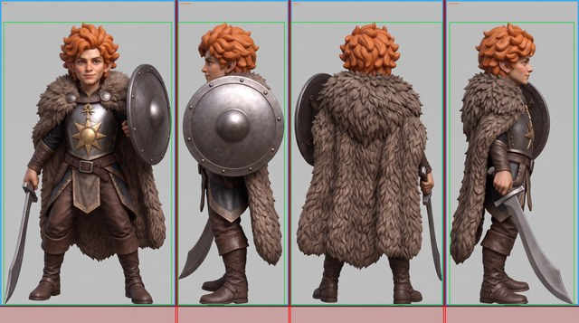
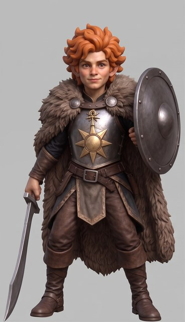
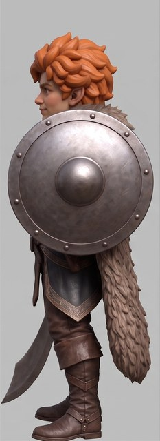
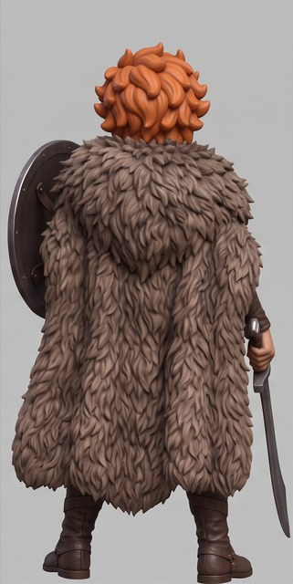
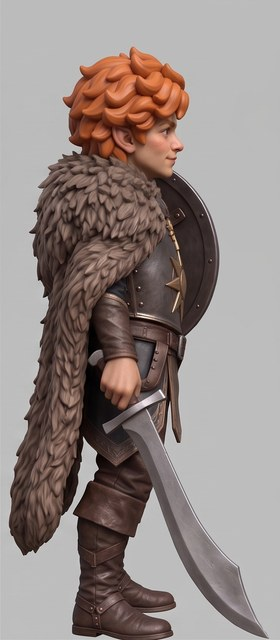
trumbert-r8-notmpl-1x4-flash31-2
trumbert-r9-crops-nt14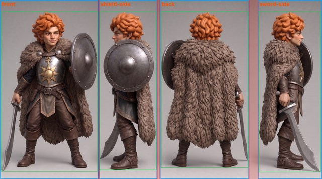
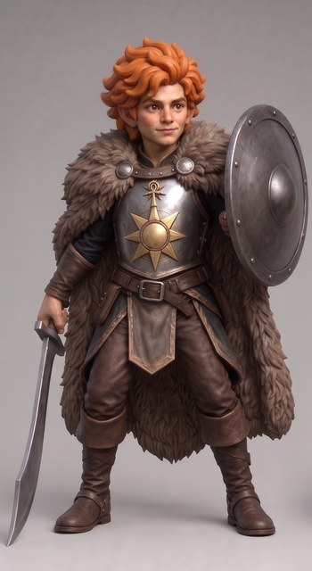
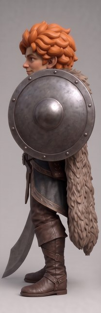
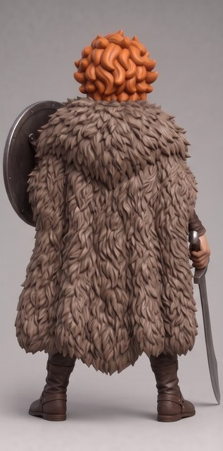
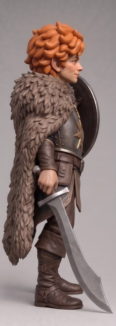
trumbert-r8-notmpl-2x2-flash31-3
trumbert-r9-crops-nt22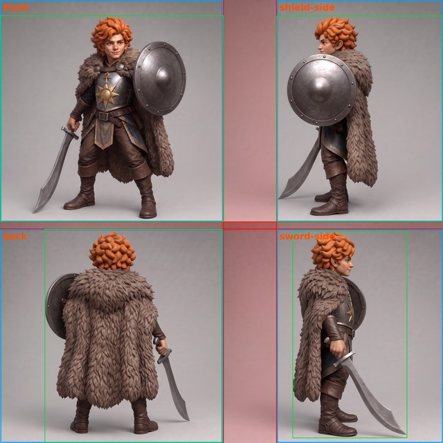
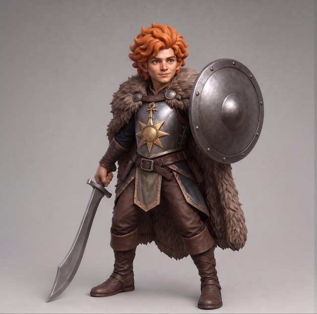
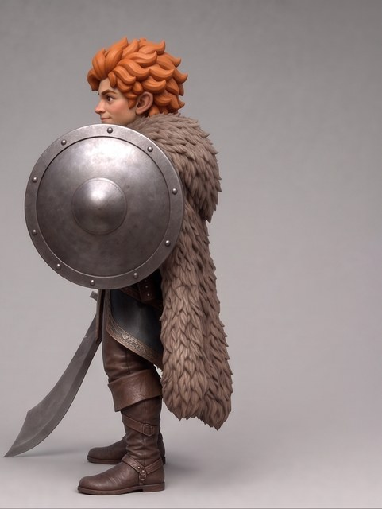
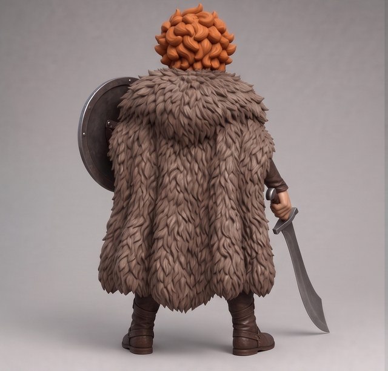
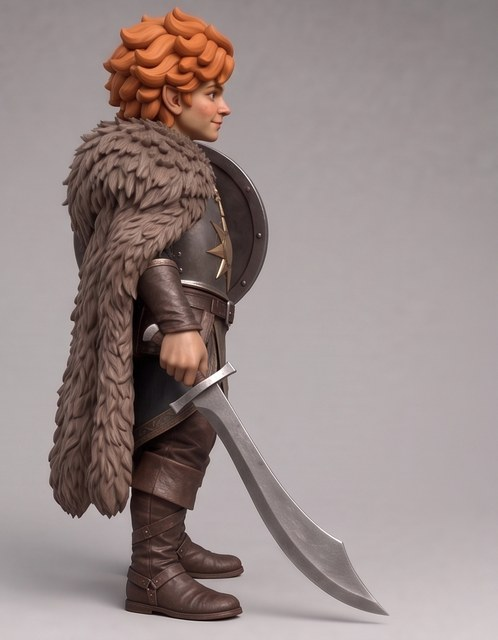
trumbert-r8-blank-1x4-flash31-2
trumbert-r9-crops-bl14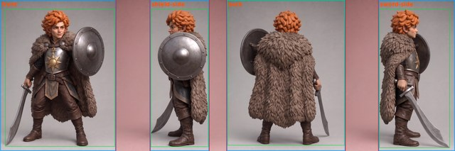
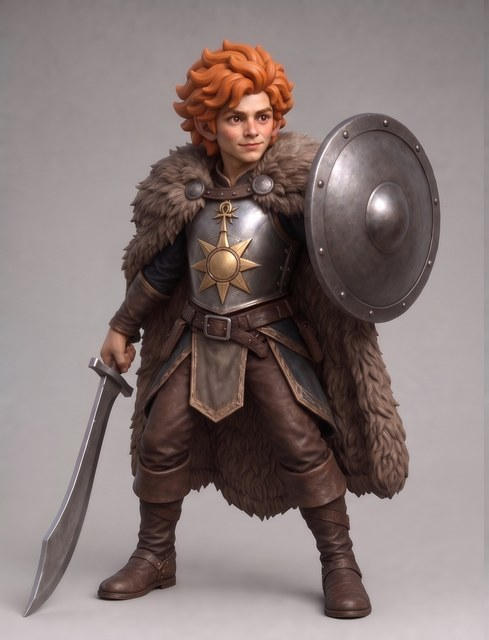
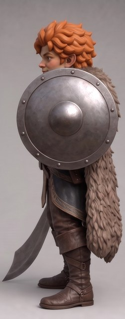
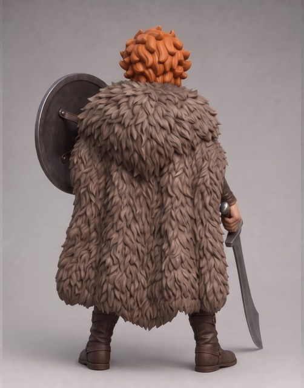
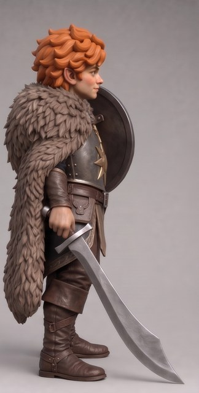
trumbert-r8-blank-2x2-flash31-2
trumbert-r9-crops-bl22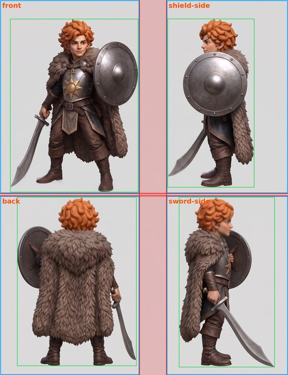
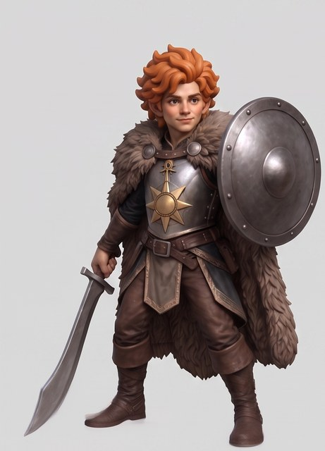
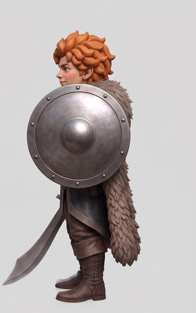
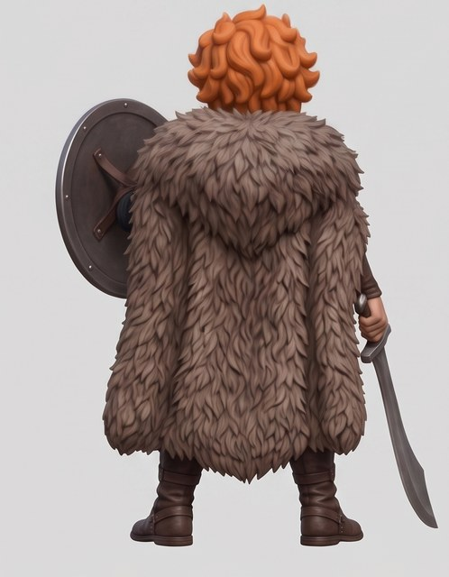
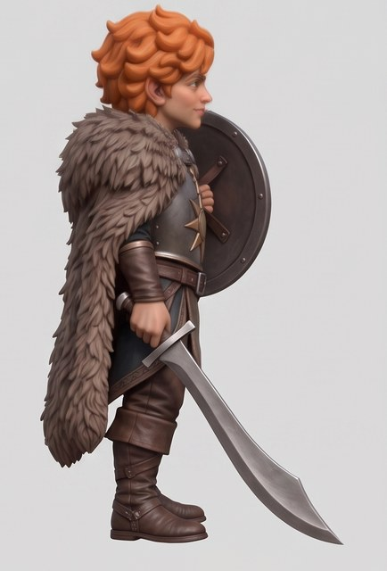
FAST only. Each raw mesh is pushed to Drive the moment it lands, before any evaluation. It then gets unit-neutral validation (watertightness, components, non-manifold edges, Euler and bounds), 4-view turnaround renders plus hand/prop zooms, and a fresh-context per-feature COMPARATIVE audit across all ten raw returns, first within each recipe's pair and then across recipes. The checklist covers scimitar shape and grip, digit count (thumb+3 is expected from the shared r6sword base), shield, chest sunburst, ankh pendant, fur cloak, ears, both feet/ground contact and any detached or phantom geometry.
R9 deliberately stops at raw evidence: no scaling, debasing, fixed-millimetre thin-part threshold or repair runs here. Those operations can create or promote a delivery mesh and therefore belong to the separately proposed r10 mesh-validation / finishing round, after the raw survivors are known. Visual fragility is still recorded in R9, with the scimitar blade/tip, ankh, ears and hair locks called out as likely risk features; it is not converted into a millimetre claim on Meshy's arbitrary raw units.
Verdicts append to reviews.jsonl; the r9 panel carries an explicit mesh STL on every card so Dimitri can rotate each raw return (decimated display proxies where the artifact cap requires them; exact STLs remain canonical on Drive). Dimitri's live-3D look is the final R9 gate, including the pathway comparison against the R1 direct-text baseline. There is no SLOW lane and no provisional/complete split because this round makes no images and every required check is local.
Meshy: 10 image runs × 20 credits = 200 credits (last-reconciled balance 2630 → ~2430; the live preflight is authoritative at execution). Image models: $0. FAST evaluation is local and free. There is no SLOW/blind-detect lane because R9 generates meshes, not images.
trumbert-r7-divider-grey14-noborder-r6sword-flash31-1, trumbert-r8-notmpl-1x4-flash31-2, trumbert-r8-notmpl-2x2-flash31-3, trumbert-r8-blank-1x4-flash31-2, trumbert-r8-blank-2x2-flash31-2 — plus their detected-position panel crops trumbert-r9-crops-{nt14,nt22,bl14,bl22} and the appended correction trumbert-r9-crops-g14-amended-20260801 (prepared BEFORE this runbook published, per Dimitri's ask: the cheap human-checkable prep happens before any spend)trumbert-r9-{g14,nt14,nt22,bl14,bl22}-m{1,2} (models/round-9/…-raw.stl) plus raw-unit validation evidence and turnaround renders; no scaled or repaired meshcodex/trumbert-r9-refreshround-feedback.jsonl). All five sheets descend from the r6sword base, so the known thumb+3 sword hand and sturdy-build drift ride along; digit count stays a hard audit item.crops, manifest, commands (pipeline detail)
round-feedback.jsonl; no Meshy credits have been spent.In progress transition. No crop or provider setting changed.tools/turnaround_crops.py — the R8 "N"-cell detected-position crop rule, productionized (the N cell was ad-hoc PIL). Content mask = saturation OR luminance edges (grey steel counts, smooth gradients don't); each axis segmented into exactly R×C figure segments by low-content gap bands, speck segments (detached blade tips) absorbed into the neighbor across the smaller gap; panels exclude the whole gap band and stay clear of detected dark divider columns; --match-height downscales panels to a uniform figure height (used for g14 only, whose P1 runs larger — the N-cell precedent). Two failure modes were caught and fixed during pre-flight on exactly these sheets: a mean-darkness divider test that misread figure-dense columns as dividers, and a fraction-based content profile that clipped thin near-horizontal scimitar blades from two 2×2 shield-side panels (now a solid-run test: any ≥4 px contiguous content run marks a column occupied). The 2026-08-01 amendment also trims near-edge full-span frame/ground rules, uses exact full-span divider runs when they account for every cut, excludes rule edges from figure-height measurement, and ignores ≤4 px height noise so a nominal match does not resample pixels.generated/meshy/round-9/; the original lineage entries remain frozen, with trumbert-r9-crops-g14-amended-20260801 appended to record the corrected g14 rectangles.notes/r9-meshy-manifest.json, committed with this runbook): ten independent image tasks (two per crop set), each explicitly pins meshy-6, triangle topology and remesh: false. The coordinator normalizes that to the sole provider setting should_remesh: false; it sends no target_polycount, so Meshy returns its raw native full triangle count instead of the low-quality 300k-capped remesh. Provider task ids are durable and polling is concurrent (meshy_manifest.py); resume with resume --run RUN_ID, never a repeated create.| # | Source (input) | Crops (input) | Views front + 3 | Out (output) |
|---|---|---|---|---|
| 1–2 | trumbert-r7-divider-grey14-noborder-r6sword-flash31-1 | inputs-g14-amended-20260801/trumbert-r9-g14-in-* | front + shield-side, back, sword-side | models/round-9/trumbert-r9-g14-m{1,2}-raw.stl |
| 3–4 | trumbert-r8-notmpl-1x4-flash31-2 | inputs-nt14/trumbert-r9-nt14-in-* | same | models/round-9/trumbert-r9-nt14-m{1,2}-raw.stl |
| 5–6 | trumbert-r8-notmpl-2x2-flash31-3 | inputs-nt22/trumbert-r9-nt22-in-* | same | models/round-9/trumbert-r9-nt22-m{1,2}-raw.stl |
| 7–8 | trumbert-r8-blank-1x4-flash31-2 | inputs-bl14/trumbert-r9-bl14-in-* | same | models/round-9/trumbert-r9-bl14-m{1,2}-raw.stl |
| 9–10 | trumbert-r8-blank-2x2-flash31-2 | inputs-bl22/trumbert-r9-bl22-in-* | same | models/round-9/trumbert-r9-bl22-m{1,2}-raw.stl |
After the refresh commit is pushed, re-render and republish the same public runbook slug from that clean pushed branch, before renewed sign-off. The source PR may still be draft: the embedded plan digest pins the exact pushed commit. The review link remains inert until the r9 panel exists:
set -euo pipefail
python3 tools/render_runbook.py \
--runbook projects/herpeton-eradication-society/trumbert/runbooks/r9-runbook.md \
--lineage projects/herpeton-eradication-society/trumbert/lineage.json \
--reviews projects/herpeton-eradication-society/trumbert/reviews.jsonl \
--cases projects/herpeton-eradication-society/trumbert/runbooks/r9-cases.json \
--review-pending --project "Herpeton Eradication Society" \
--character Trumbert --out /tmp/trumbert-r9-runbook
python3 tools/publish_review.py /tmp/trumbert-r9-runbook \
--slug herpeton-eradication-society/trumbert/r9-runbook \
--title "Trumbert — Round 9 runbook" \
--message "Republish Trumbert R9 — two rolls per keeper and start gate"Only after PR #404 merges, append the approved amendment to R9's existing Discord thread and advance its header from that reply. The start reply remains separate and follows the exact-main/gate verification below:
set -euo pipefail
python3 tools/discord_share.py --channel trumbert \
--thread 1533065771029237920 \
--thread-name "Round 9 — Trumbert updates" \
--once trumbert-r9-approved-two-roll-20260807 \
--message "R9 approved and merged as the start PR: two raw no-remesh Meshy rolls for each of five keeper crop sets, ten calls / 200-credit cap. Crop pixels and task settings are unchanged; 24 mm finishing remains deferred to R10. No credits spent yet."
python3 tools/discord_share.py --channel trumbert \
--update-header 1533065771029237920 \
--headline "Round 9 — Trumbert" \
--status "APPROVED — start gate running" \
--decision "Run ten raw meshes; pick the survivor(s) for R10 finishing" \
--spend-state "0 of 200 Meshy credits spent" \
--spend-estimate "200 Meshy credits planned" \
--artifact-label Runbook \
--artifact-link "https://lackofcheese.github.io/ai-stl-review/reviews/herpeton-eradication-society/trumbert/r9-runbook/" \
--event-id trumbert-r9-approved-two-roll-20260807Before PR #404 can merge, append Dimitri's sign-off with tools/round_gate.py, commit and push the gate record, and verify it against the freshly republished canonical runbook page. PR #404 carries Dimitri's explicitly requested In progress state transition alongside the approved two-roll amendment; its merge is the start authorization.
After Dimitri approves and merges the start PR, execute from exact current main. The Discord start reply and header update happen after the durable gate passes and before the first paid provider call:
set -euo pipefail
git fetch origin main
test "$(git rev-parse HEAD)" = "$(git rev-parse origin/main)"
python3 tools/round_gate.py verify \
--file projects/herpeton-eradication-society/trumbert/round-gates.jsonl \
--round r9 \
--published-html "${AI_STL_REVIEW_DIR:-../ai-stl-review}/reviews/herpeton-eradication-society/trumbert/r9-runbook/index.html"
test "$(git rev-parse HEAD)" = "$(git rev-parse origin/main)"
python3 tools/discord_share.py --channel trumbert \
--thread 1533065771029237920 \
--thread-name "Round 9 — Trumbert updates" \
--once trumbert-r9-started \
--message "R9 started from merged current main after the durable gate passed: ten raw no-remesh Meshy reconstructions, two per keeper, 200-credit cap."
python3 tools/discord_share.py --channel trumbert \
--update-header 1533065771029237920 \
--headline "Round 9 — Trumbert" \
--status "IN PROGRESS — ten raw multi-view Meshy reconstructions" \
--decision "Pick the raw survivor(s) for the separately runbooked R10 finishing pass" \
--spend-state "0 of 200 Meshy credits spent" \
--spend-estimate "200 Meshy credits planned" \
--artifact-label Runbook \
--artifact-link "https://lackofcheese.github.io/ai-stl-review/reviews/herpeton-eradication-society/trumbert/r9-runbook/" \
--event-id trumbert-r9-started
# setup (cold VM): cloud/setup.sh installs op CLI; binary inputs live on Drive
tools/drive_sync.sh pull \
projects/herpeton-eradication-society/trumbert/generated/meshy/round-9
# Ten Meshy multi-view runs via the durable manifest coordinator. Each
# completed download is pushed to Drive from the coordinator's flushed `wrote`
# line, while the other tasks keep polling. A failed push is remembered and
# makes the attached pipeline fail after all coordinator output is drained.
# Every task explicitly sets remesh:false; the provider request is therefore
# should_remesh:false with no target_polycount.
P=projects/herpeton-eradication-society/trumbert
python3 tools/meshy_manifest.py run \
--manifest "$P/notes/r9-meshy-manifest.json" 2>&1 | {
push_failed=0
while IFS= read -r line; do
printf '%s\n' "$line"
case "$line" in
wrote*"/models/round-9/"*"-raw.stl ("*)
tools/drive_sync.sh push "$P/models/round-9" || push_failed=1
;;
esac
done
exit "$push_failed"
}
# record the printed RUN_ID in rounds.md; after any interruption:
# python3 tools/meshy_manifest.py resume --run RUN_ID
# The pipeline above has pushed every landed mesh before this raw-only
# validation and rendering stage. Repeat with CELL={g14,nt14,nt22,bl14,bl22}
# and ROLL={1,2}.
CELL=g14
ROLL=1
STEM="trumbert-r9-${CELL}-m${ROLL}"
STL="$P/models/round-9/${STEM}-raw.stl"
python3 tools/mesh_validate.py --stl "$STL" --units raw \
--label "$STEM-raw" \
--out "$P/notes/r9-${CELL}-raw-validation.json"
python3 tools/stl_render.py --stl "$STL" \
--out-dir "$P/generated/renders/round-9" \
--stem "$STEM-raw" --mode turnaround
# zoom crops of hands/props per mesh as needed: --mode zoom --z-min/--z-max
# fresh-context per-feature comparative audit -> review_log.py -> r9-panelVerdicts land in reviews.jsonl; the round closes with the r9-panel inline artifact (a raw interactive mesh viewer on every card), a rounds.md result entry, and this runbook's panel cross-link going live. Results live there, never here. Scaling, fixed-mm thin probing and any repair wait for r10.
projects/herpeton-eradication-society/trumbert/prompts/r7-turnaround-standard.txt
Two images are attached. IMAGE 1 is the reference character: the gnome champion Trumbert, a finished full-colour concept render. IMAGE 2 is a BLANK TEMPLATE — one horizontal row of four equal empty slots separated by divider lines. Produce a faithful TURNAROUND SHEET of the EXACT SAME character from IMAGE 1, painted into the template. Paint EXACTLY ONE view of him into each of the four slots, left to right, as a clean 90-degree turntable. This is a rotation of the camera around a fixed figure — do NOT redesign, restyle or re-imagine him. REPRODUCE HIM FAITHFULLY in every slot, identical to IMAGE 1: the same photorealistic full-colour render style, lighting, lithe fey gnome proportions (not stocky), face, ginger flame-coloured hair as one thick chunky mass with the pointed ears embedded in it, steel breastplate with one bold golden sun emblem, ankh-and-sun pendant, heavy thick fur cloak, brown leather trousers and boots, steel round shield, and CURVED single-edged scimitar (one clean convex saber curve, tip lowered to ground level) in his RIGHT hand. Same colours, materials, textures and proportions in all four slots — only the viewing angle changes. Plain flat neutral-grey studio background, identical in every slot. Both feet flat at the same ground level. NO base, stand, text, numbers, letters, arrows or logos. The four slots, left to right: SLOT 1 — FRONT view (0 degrees): facing the viewer. Full face visible, chest sun emblem centred, scimitar in his right hand on the VIEWER'S LEFT, round shield on his left arm on the VIEWER'S RIGHT. SLOT 2 — SHIELD-SIDE profile (90 degrees): a clean pure side view showing the round shield in profile and the fur cloak down the back. SLOT 3 — TRUE BACK view (180 degrees): seen directly from behind. Show the back of the head, flame hair, fur cloak and shield. DO NOT draw the face. SLOT 4 — SWORD-SIDE profile (270 degrees): a clean pure side view from the opposite side, showing the curved scimitar in profile with its tip lowered toward the ground. Paint one view per slot at a consistent size and vertical alignment. Render every object with exactly one crisp opaque silhouette boundary: no translucent echoes, false double contours, smears or ghosting. Keep every divider a single crisp solid line.


(no prompt recorded)

projects/herpeton-eradication-society/trumbert/prompts/r8-notmpl-1x4.txt
One image is attached: IMAGE 1, the reference character — the gnome champion Trumbert, a finished full-colour concept render. Produce a faithful TURNAROUND SHEET of the EXACT SAME character as a SINGLE HORIZONTAL ROW of FOUR equal full-body views, arranged left to right as a clean 90-degree turntable. Do NOT use a 2x2 grid, do NOT duplicate or drop any view, and do NOT draw any divider lines, boxes or borders — just four evenly-spaced views in one wide row: FIRST (leftmost), SECOND, THIRD, FOURTH (rightmost). This is only a rotation of the camera around a fixed figure — do NOT redesign, restyle or re-imagine him. REPRODUCE HIM FAITHFULLY in every view, identical to IMAGE 1: the same photorealistic full-colour render style and lighting; lithe fey gnome proportions (slender and athletic, NOT stocky, NOT dwarfish); youthful clean-shaven face with large bright eyes and an easy warm grin; ginger flame-coloured hair as ONE thick chunky connected mass with the slightly-pointed ears embedded in it (no thin wisps); a fitted steel breastplate bearing exactly ONE bold geometric golden sun/dawn emblem (thick triangular rays, only a few); an ankh-and-sun pendant at the neck in raised relief; a heavy thick fur-collared cloak across the shoulders; brown leather trousers and sturdy boots; a plain round steel shield (plain domed boss) on his LEFT arm; and a plain cold-iron CURVED single-edged scimitar (one clean convex saber curve, thick blade, plain pommel) in his RIGHT hand, held LOW with its tip resting on the ground beside his near foot. Same colours, materials, textures and proportions in every view — only the viewing angle changes. Plain flat neutral-grey studio background, identical across the row. Both feet flat at the same ground level. NO base, stand, text, numbers, letters, arrows or logos. The four views, left to right: FIRST — FRONT view (0 degrees): facing the viewer. Full face visible, chest sun emblem centred, scimitar in his right hand on the VIEWER'S LEFT with its tip grounded, round shield on his left arm on the VIEWER'S RIGHT. SECOND — SHIELD-SIDE profile (90 degrees): a clean pure side view showing the round shield in profile and the heavy fur cloak down the back. THIRD — TRUE BACK view (180 degrees): seen directly from behind. Show the back of the head, flame hair, fur cloak and shield. DO NOT draw the face. FOURTH — SWORD-SIDE profile (270 degrees): a clean pure side view from the opposite side, showing the curved scimitar in profile with its tip lowered to the ground. Paint one view per position at a consistent size and vertical alignment. Render every object with exactly one crisp opaque silhouette boundary: no translucent echoes, false double contours, smears or ghosting.
(no prompt recorded)
projects/herpeton-eradication-society/trumbert/prompts/r8-notmpl-2x2.txt
One image is attached: IMAGE 1, the reference character — the gnome champion Trumbert, a finished full-colour concept render. Produce a faithful TURNAROUND SHEET of the EXACT SAME character as a 2x2 GRID of FOUR equal full-body views, ordered as a clean 90-degree turntable in reading order: TOP-LEFT, then TOP-RIGHT, then BOTTOM-LEFT, then BOTTOM-RIGHT. Four views filling the square canvas; do NOT use a single row, do NOT duplicate or drop any view, and do NOT draw any divider lines, boxes or borders. This is only a rotation of the camera around a fixed figure — do NOT redesign, restyle or re-imagine him. REPRODUCE HIM FAITHFULLY in every view, identical to IMAGE 1: the same photorealistic full-colour render style and lighting; lithe fey gnome proportions (slender and athletic, NOT stocky, NOT dwarfish); youthful clean-shaven face with large bright eyes and an easy warm grin; ginger flame-coloured hair as ONE thick chunky connected mass with the slightly-pointed ears embedded in it (no thin wisps); a fitted steel breastplate bearing exactly ONE bold geometric golden sun/dawn emblem (thick triangular rays, only a few); an ankh-and-sun pendant at the neck in raised relief; a heavy thick fur-collared cloak across the shoulders; brown leather trousers and sturdy boots; a plain round steel shield (plain domed boss) on his LEFT arm; and a plain cold-iron CURVED single-edged scimitar (one clean convex saber curve, thick blade, plain pommel) in his RIGHT hand, held LOW with its tip resting on the ground beside his near foot. Same colours, materials, textures and proportions in every view — only the viewing angle changes. Plain flat neutral-grey studio background, identical in every cell. Both feet flat at the same ground level. NO base, stand, text, numbers, letters, arrows or logos. The four views, in reading order: TOP-LEFT — FRONT view (0 degrees): facing the viewer. Full face visible, chest sun emblem centred, scimitar in his right hand on the VIEWER'S LEFT with its tip grounded, round shield on his left arm on the VIEWER'S RIGHT. TOP-RIGHT — SHIELD-SIDE profile (90 degrees): a clean pure side view showing the round shield in profile and the heavy fur cloak down the back. BOTTOM-LEFT — TRUE BACK view (180 degrees): seen directly from behind. Show the back of the head, flame hair, fur cloak and shield. DO NOT draw the face. BOTTOM-RIGHT — SWORD-SIDE profile (270 degrees): a clean pure side view from the opposite side, showing the curved scimitar in profile with its tip lowered to the ground. Paint one view per cell at a consistent size and vertical alignment. Render every object with exactly one crisp opaque silhouette boundary: no translucent echoes, false double contours, smears or ghosting.
(no prompt recorded)
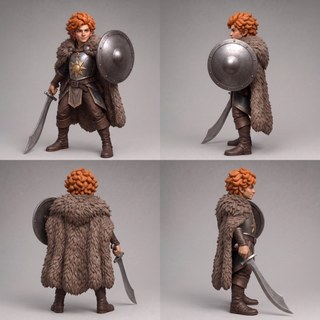
projects/herpeton-eradication-society/trumbert/prompts/r8-blank-1x4.txt
Two images are attached. IMAGE 1 is the reference character — the gnome champion Trumbert, a finished full-colour concept render. IMAGE 2 is a BLANK CANVAS: it shows ONLY the shape and size of the finished sheet, with no dividers, lines, boxes or marks of any kind. Produce a faithful TURNAROUND SHEET of the EXACT SAME character as IMAGE 1, painted ACROSS the blank canvas of IMAGE 2 as a single horizontal row of FOUR equal full-body views, evenly spaced left to right, as a clean 90-degree turntable. Use the canvas only as a size and shape guide — do NOT draw any divider lines, boxes or borders. Do NOT use a 2x2 grid, and do NOT duplicate or drop any view. This is only a rotation of the camera around a fixed figure — do NOT redesign, restyle or re-imagine him. REPRODUCE HIM FAITHFULLY in every view, identical to IMAGE 1: the same photorealistic full-colour render style and lighting; lithe fey gnome proportions (slender and athletic, NOT stocky, NOT dwarfish); youthful clean-shaven face with large bright eyes and an easy warm grin; ginger flame-coloured hair as ONE thick chunky connected mass with the slightly-pointed ears embedded in it (no thin wisps); a fitted steel breastplate bearing exactly ONE bold geometric golden sun/dawn emblem (thick triangular rays, only a few); an ankh-and-sun pendant at the neck in raised relief; a heavy thick fur-collared cloak across the shoulders; brown leather trousers and sturdy boots; a plain round steel shield (plain domed boss) on his LEFT arm; and a plain cold-iron CURVED single-edged scimitar (one clean convex saber curve, thick blade, plain pommel) in his RIGHT hand, held LOW with its tip resting on the ground beside his near foot. Same colours, materials, textures and proportions in every view — only the viewing angle changes. Plain flat neutral-grey studio background, identical across the row. Both feet flat at the same ground level. NO base, stand, text, numbers, letters, arrows or logos. The four views, left to right: FIRST — FRONT view (0 degrees): facing the viewer. Full face visible, chest sun emblem centred, scimitar in his right hand on the VIEWER'S LEFT with its tip grounded, round shield on his left arm on the VIEWER'S RIGHT. SECOND — SHIELD-SIDE profile (90 degrees): a clean pure side view showing the round shield in profile and the heavy fur cloak down the back. THIRD — TRUE BACK view (180 degrees): seen directly from behind. Show the back of the head, flame hair, fur cloak and shield. DO NOT draw the face. FOURTH — SWORD-SIDE profile (270 degrees): a clean pure side view from the opposite side, showing the curved scimitar in profile with its tip lowered to the ground. Paint one view per position at a consistent size and vertical alignment. Render every object with exactly one crisp opaque silhouette boundary: no translucent echoes, false double contours, smears or ghosting.

(no prompt recorded)
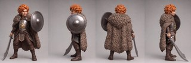
projects/herpeton-eradication-society/trumbert/prompts/r8-blank-2x2.txt
Two images are attached. IMAGE 1 is the reference character — the gnome champion Trumbert, a finished full-colour concept render. IMAGE 2 is a BLANK CANVAS: it shows ONLY the shape and size of the finished sheet (a tall square), with no dividers, lines, boxes or marks of any kind. Produce a faithful TURNAROUND SHEET of the EXACT SAME character as IMAGE 1, painted onto the blank canvas of IMAGE 2 as a 2x2 GRID of FOUR equal full-body views, ordered as a clean 90-degree turntable in reading order: TOP-LEFT, TOP-RIGHT, BOTTOM-LEFT, BOTTOM-RIGHT. Use the canvas only as a size and shape guide — do NOT draw any divider lines, boxes or borders. Do NOT use a single row, and do NOT duplicate or drop any view. This is only a rotation of the camera around a fixed figure — do NOT redesign, restyle or re-imagine him. REPRODUCE HIM FAITHFULLY in every view, identical to IMAGE 1: the same photorealistic full-colour render style and lighting; lithe fey gnome proportions (slender and athletic, NOT stocky, NOT dwarfish); youthful clean-shaven face with large bright eyes and an easy warm grin; ginger flame-coloured hair as ONE thick chunky connected mass with the slightly-pointed ears embedded in it (no thin wisps); a fitted steel breastplate bearing exactly ONE bold geometric golden sun/dawn emblem (thick triangular rays, only a few); an ankh-and-sun pendant at the neck in raised relief; a heavy thick fur-collared cloak across the shoulders; brown leather trousers and sturdy boots; a plain round steel shield (plain domed boss) on his LEFT arm; and a plain cold-iron CURVED single-edged scimitar (one clean convex saber curve, thick blade, plain pommel) in his RIGHT hand, held LOW with its tip resting on the ground beside his near foot. Same colours, materials, textures and proportions in every view — only the viewing angle changes. Plain flat neutral-grey studio background, identical in every cell. Both feet flat at the same ground level. NO base, stand, text, numbers, letters, arrows or logos. The four views, in reading order: TOP-LEFT — FRONT view (0 degrees): facing the viewer. Full face visible, chest sun emblem centred, scimitar in his right hand on the VIEWER'S LEFT with its tip grounded, round shield on his left arm on the VIEWER'S RIGHT. TOP-RIGHT — SHIELD-SIDE profile (90 degrees): a clean pure side view showing the round shield in profile and the heavy fur cloak down the back. BOTTOM-LEFT — TRUE BACK view (180 degrees): seen directly from behind. Show the back of the head, flame hair, fur cloak and shield. DO NOT draw the face. BOTTOM-RIGHT — SWORD-SIDE profile (270 degrees): a clean pure side view from the opposite side, showing the curved scimitar in profile with its tip lowered to the ground. Paint one view per cell at a consistent size and vertical alignment. Render every object with exactly one crisp opaque silhouette boundary: no translucent echoes, false double contours, smears or ghosting.

(no prompt recorded)
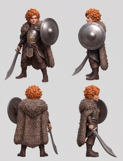